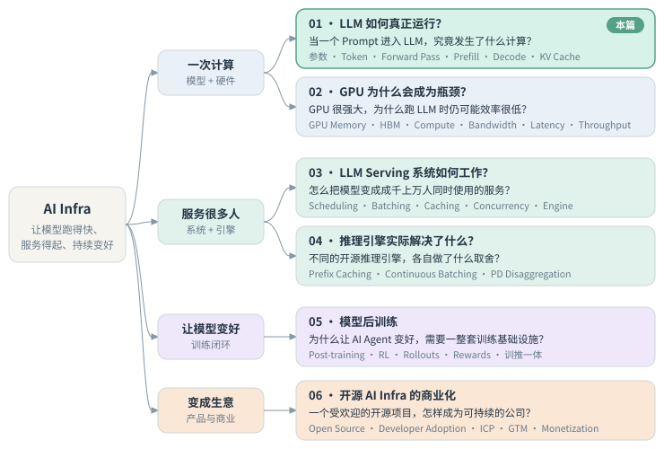
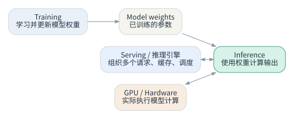
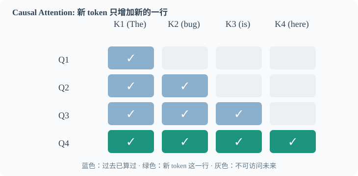
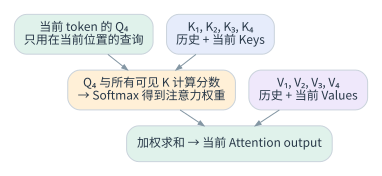
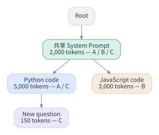
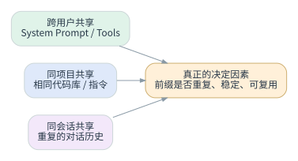
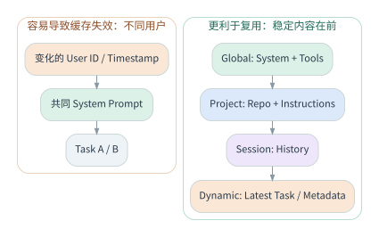

一个 Prompt 进入大模型之后，发生了什么？
这是我从零学 AI Infra 的第一篇笔记。读者大概和我一样：用过、也大致懂 AI，但不是 Infra 方向的专家。文中的 token 数字和案例是为了讲清楚机制的教学假设，示意图也不是任何引擎的完整官方实现。
00我是怎么开始学 AI Infra 的
我对 AI Infra 完全没有概念，连该从哪里开始都不知道。可我要面试的，正好是一家 AI Infra 公司，总得先弄明白这个领域在做什么。
我的第一反应是让 AI 讲给我听。
第一次，我让它讲一些基础。它讲得太浅，好几处跟 AI Infra 对不上。第二次，我让它围绕这家公司的核心技术来讲，结果它开始给我介绍这家公司。我当时的反应是：No, no, no, hold on，不对。
这时候我意识到一件事，也是整个过程里我觉得最重要的一点：
当你觉得 AI 给的东西不对，别让它一遍遍重试。它没理解你要什么，试多少次也试不出来。这时候要停下来，和它一起想清楚该怎么做。
于是我换了一种问法：“我现在不懂这个领域。我们能不能先搭一棵知识树？先有结构，再拆成步骤，沿着这棵树一层一层往下学。”
这一次，它给出的学习计划终于对了。
还有一个做法很关键：我让它每讲完一个知识点，就问我一个问题，我来回答。这样它就能测出我到底有没有理解这个概念。这其实就是费曼学习法：能用自己的话讲清楚，才算真的懂了。具体怎么用 AI 做这件事，我在《如何利用 AI 自学一切》里写过。
不对就停，不重试
反复重试只会得到同一种误解的不同版本。先和 AI 对齐“我到底要什么”。
先要结构
让 AI 先画出这个领域的知识树，分好层级，再决定从哪一层开始。
每个节点一个问题
学完一个模块，要能真正解释一个问题，而不只是记住几个定义。
每讲一点，考我一题
AI 讲完一个知识点就出一道题，我用自己的话回答。答不上来，就说明还没真懂。

四层的顺序有讲究：先弄懂一次计算本身（模型怎么算、硬件卡在哪），再看怎么把它服务给很多人，然后是怎么让模型持续变好，最后才是这些技术怎么变成生意。这一篇是第一个模块：当一个 Prompt 进入 LLM，到底发生了什么计算？哪些重复计算可以避免？
为了不让概念飘在空中，我全程用同一个例子：一家用开源模型（比如 Qwen）做 AI Coding Agent 的创业公司。每个概念我都按同一个顺序去问：为什么会遇到这个问题（Why）→ 实际怎么计算（How）→ 这意味着什么（So What）→ 放进真实产品里是什么样（Apply）。
01Training、Inference，以及一个请求的生命周期
Training 调整模型权重，让模型学会完成任务的能力。普通的 Inference 使用已经训练好的权重，为新输入计算输出，权重通常不变。Inference 不是“从数据库取出一段预设答案”，而是做一次新的前向计算（Forward Pass），逐个生成 tokens。

继续用 AI Coding Agent 的例子：用户提交 20,000 input tokens 的代码上下文，模型生成 50 output tokens。主要流程是：
- 应用把内容变成模型能处理的 token IDs。
- Prefill：对已知的输入 tokens 运行模型，计算各层的隐藏状态和 KV，同时得到生成第一个 token 所需的信息。
- Decode：通常每一步生成一个 token，把它加入上下文，再生成下一个。
- 把输出 tokens 转回可读文字，返回给应用。
Prefill ≠ Decode
| Prefill | Decode | |
|---|---|---|
| 主要任务 | 处理已有输入 | 逐步生成新输出 |
| 并行特征 | 输入位置已知，计算可以大量并行 | 同一请求的后一步通常依赖前一步的生成结果 |
| 典型性能指标 | TTFT（Time to First Token）的重要组成 | TPOT（Time per Output Token）、生成速度 |
| 工程关注 | 长 prompt 的高效处理 | 每个生成步骤的效率和 KV 访问 |
检验一下：一次请求有 20,000 输入 / 50 输出，另一次有 100 输入 / 2,000 输出。第一种更可能主要消耗 Prefill 资源；第二种更可能受长时间 Decode 影响。不过总延迟不能只凭 token 数量判断。
一个容易误解的细节：输出 2,000 tokens 意味着大约 2,000 个连续的 token 预测步骤，而每一步内部仍有大量 GPU 并行计算。不同用户在同一个 Decode 步骤中的计算，也可以通过 batching 一起处理。也就是说：sequential across generation steps; parallel within each step and across batched requests。Speculative Decoding 等方法还可以减少一部分串行开销。
02Causal Attention：为什么过去的状态可以保持不变？
在 Transformer 的 Self-Attention 中，每个 token 会产生 Query、Key、Value 三个向量。对于第 4 个 token，注意力计算在概念上用 Q₄ 去和 K₁…K₄ 匹配，再用匹配得到的权重汇总 V₁…V₄。

Causal 的意思是：过去位置看不到后面的未来 token。所以加入第 4 个 token 时，前三个位置的 Attention 结果不会被改写，只需要计算新增位置的输出。
通常的 Attention 表达式：
为什么存 K 和 V，却不必长期存历史 Q？

- 过去的 Q：已经在生成对应位置的 Attention 输出时用过了。处理新位置时，不需要再用 Q₁、Q₂、Q₃ 重新发起查询。
- 过去的 K：新位置的 Q₄ 仍要和历史 Keys 比较，计算新的 Attention Scores。
- 过去的 V：新的 Attention Weights 仍要加权历史 Values，得到当前输出。
- 完整的 Attention Matrix：没必要为所有历史 query 长期保存所有分数。新的 query 会算出自己的分数，而整个矩阵可能非常大。
所以，KV Cache 存的是模型每个 Attention 层的历史 Key / Value 张量。它不是原始文字，也不是“模型的记忆数据库”。
注意，Cache 并没有消除 Attention 运算：新 token 仍然要计算自己的状态、对历史 Keys 打分、再汇总 Values。
03KV Cache 的收益与代价
收益：同一请求后续生成时，不必每一步都从头重算整段历史。长对话和 Agent 多轮任务尤其受益。
代价：KV 张量要存起来，通常占用 GPU 显存。对常见的全上下文 Attention 模型，在其他条件不变时，KV Cache 的大小大致随上下文长度、活跃请求数量线性增长。显存有限，不可能无成本地保留所有人的所有历史状态。
于是出现了两个互相牵制的目标：
尽可能复用缓存，减少重复计算；同时不能让缓存占满显存，挤掉新请求。
这正是知识树里模块 02（GPU Memory / Bandwidth）和模块 03（Serving）要继续回答的瓶颈。
04从单个请求的 KV Cache，到跨请求的前缀复用
普通的增量生成，首先让同一请求内部复用历史 KV。再进一步：如果不同请求共享完全相同的 token 前缀，在模型和推理配置兼容的前提下，这段前缀的 KV 也可以复用。
假设有三个请求：
- A：Shared System Prompt（2,000）+ Python Code（5,000），共 7,000 tokens。
- B：同一 Shared System Prompt（2,000）+ JavaScript Code（3,000），共 5,000 tokens。
- C：同一 System Prompt（2,000）+ 同一 Python Code（5,000）+ New Question（150），共 7,150 tokens。

推理引擎常用一棵压缩前缀树来管理这些前缀：一条边可以表示一段连续 tokens，多个请求沿着相同前缀共用分支。引擎把 token 序列映射到对应的 KV Cache 位置，在这棵树上做前缀匹配、缓存插入、复用和淘汰。树的索引结构和 GPU 上实际的 KV 数据是两样东西。
在理想情况下（缓存一直可用）：
| 请求 | 不做跨请求复用：需处理输入 | 前缀复用后：新增输入 |
|---|---|---|
| A | 7,000 | 7,000 |
| B | 5,000 | 3,000 |
| C | 7,150 | 150 |
| 合计 | 19,150 | 10,150 |
这相当于减少了 9,000 / 19,150 ≈ 47% 的重复 Prefill token 处理量。但这不等于真实延迟或 FLOPs 一定减少 47%，实际性能还取决于计算开销、实现方式、缓存是否还在等因素。
关键一点：相同的单词不等于相同的 KV。一个 token 在高层的表示，取决于它之前的上下文。能复用的，是完全相同、位置和配置都兼容的前缀计算状态，不能在两段不同对话里找相同的词来复用。
Eviction（淘汰）
显存不够时，不可能无限保留所有分支。常见的做法是 LRU（Least Recently Used）：从可淘汰的叶节点开始释放缓存，同时保护正在被请求使用的部分。也有引擎提供 LFU、SLRU、按优先级淘汰等策略。缓存能不能命中、还在不在，也受请求调度、路由、GPU 容量等因素影响。
05我的一个误判：真正要分的不是 To B 和 To C
我最初的直觉是：To B 团队共享代码仓库，似乎更容易命中相同的 Prompt；To C 每个用户的历史都不一样，可能很难共享。
后来发现，跨用户共享并不是唯一的复用来源：

| 共享范围 | 例子 | 意义 |
|---|---|---|
| Global / cross-user | 固定 System Prompt、Tool Definitions | 不同用户也可以共享稳定前缀 |
| Project | 相同代码库、相同项目指令 | 团队协作场景可能额外共享很长的前缀 |
| Session | 同一个人的连续对话与历史 | 即使每个人都不同，同一会话内也能持续复用 |
结论：决定 Prefix Caching 价值的，不是 B2B / B2C 的标签，而是 workload 里“重复、稳定、可复用”的前缀占多少，以及它们能不能被有效保留和访问。
06Prompt 的结构本身也是工程设计
我当时想到一个具体问题：如果把每次都变的 User ID / Timestamp 放在最前面，即使后面 2,000 tokens 的 System Prompt 完全相同，为什么缓存还是经常 Miss？
因为前缀匹配从最开头开始。前面一旦不同，后面每个位置的计算上下文都变了，不能假装开头不存在、直接复用后面那段 KV。
更好的原则是：Stable content first, dynamic content last。

可以按稳定性分层排列：
- Global：稳定的工具定义和 System Instructions。
- Project：项目级别的相同指令、代码库背景。
- Session：当前会话中稳定的历史。
- Dynamic：当前任务、临时状态、时间等变化的内容。
如果 User ID、时间戳只是给应用记日志用的，根本不必放进模型的 Prompt，在应用的元数据层管理就行。但要注意：不能为了命中率去改变模型必须遵循的指令顺序，也不能越过租户之间的数据隔离边界。实际的 API 往往还有固定的 tools → system → messages 序列化约束。
真实工程案例：Claude Code
Anthropic 在 2026 年的工程博客《Lessons from building Claude Code: Prompt caching is everything》里描述了真实的做法：把静态的 System Prompt 和工具定义放在稳定前缀；项目的 CLAUDE.md、Session 状态、Conversation 按层次组织。他们也遇到过因为 Timestamp、工具顺序变化导致缓存失效的情况，并特别强调稳定前缀和缓存指标。
要区分清楚：这是 Anthropic 自家 API 的 Prompt Caching 实践，不能据此推断 Claude Code 底层用的是哪个开源推理引擎。我们借鉴的是相同的工程原则，底层实现是两回事。
07把这条线串起来
学到这里，我不会再只说一句“这个推理引擎让 AI 更快”。更有解释力的说法是一条因果链：
当然，一个推理引擎不只有前缀缓存，还包括请求调度、批处理、模型执行等其他优化。这一篇只走通了其中一条重要的技术线索。顺着它，可以继续问几个更接近产品的问题：
- 哪些开发者的工作负载共享大量 Stable Prefix？Agent？多轮编程？RAG？
- 怎么衡量有效缓存命中、TTFT、TPOT、吞吐量和每个请求的成本？
- 在什么模型、硬件、请求分布下，收益明显？什么时候值得付出缓存占用的显存？
学完这一模块，我能从用户输入一路讲到 Prefill → Decode → Causal Attention → KV Cache → 跨请求前缀复用，并说清楚它的收益、代价和适用条件。
—参考资料
- Vaswani et al. — Attention Is All You Need (2017)
- Kwon et al. — Efficient Memory Management for Large Language Model Serving with PagedAttention (2023)
- vLLM — Automatic Prefix Caching (design doc)
- Anthropic — Lessons from building Claude Code: Prompt caching is everything (2026-04-30)
- Anthropic — Prompt Caching Docs
核查边界：示意图不是任何引擎的完整官方实现；案例中的 token 数是教学假设；跨请求共享受模型、配置、缓存驻留和隔离约束影响；Anthropic API 的 Prompt Caching 不等于开源推理引擎内部的前缀缓存；减少重复输入的 token 数，不等于同比例节省真实的 GPU 计算或成本。